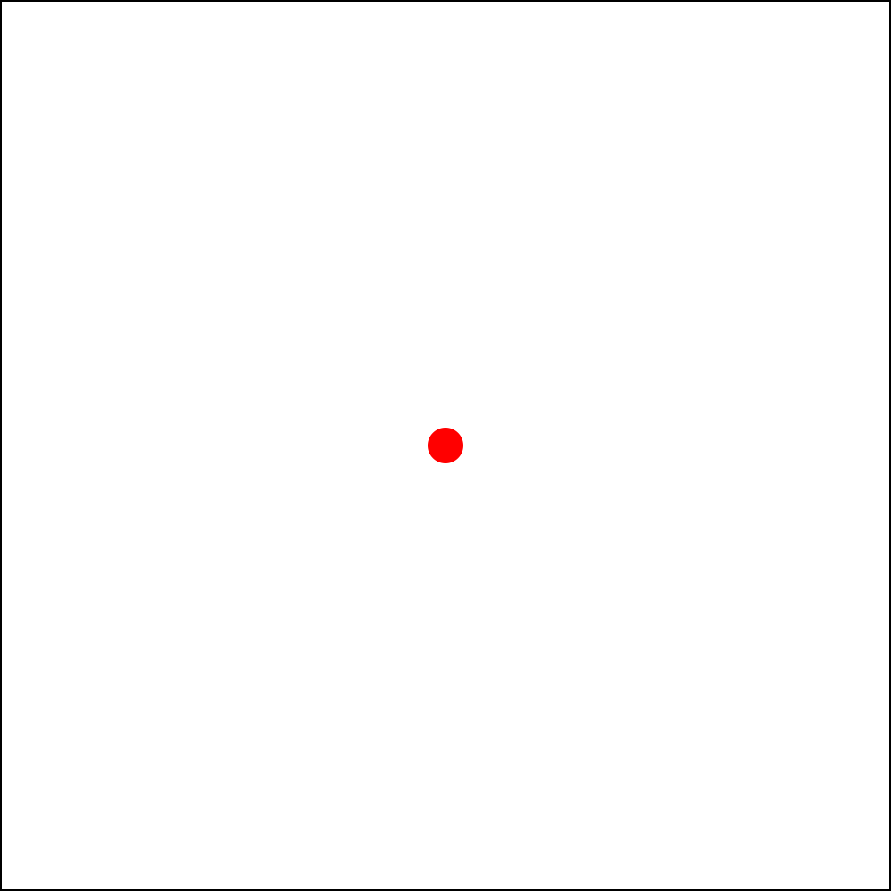
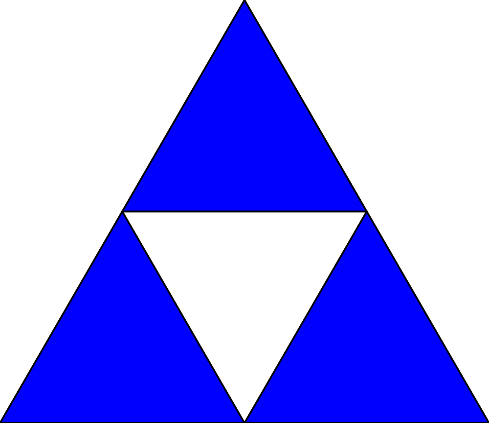

Introduction
Welcome to Haskell through Diagrams! This is a book that teaches Haskell based using visualizations, facilitated by the diagrams package.
How to Read This Book
The book is presented mostly as a set of examples followed by a number of exercises that either ask you to experiment using a particular set of functions or to try to replicate a diagram I show you a picture of. I recommend reading through the chapter and modifying parts of examples and trying them in GHCi in order to get better at predicting what a particular piece of code will do. For the code exercises, I include detailed solutions to all of them in the complementary repository, however relying on the solution is only cheating your self out of figuring out how to draw the diagram for yourself.
Under Construction
This book is still under construction. Currently chapters 1-3 are mostly finished, and chapter 4 has been started on. Please consider anything in this book a work in progress to some extent.
Getting Started
Installing Stack
Haskell Stack is the best package manager for Haskell and it is what we will be using in this book. Install it by visiting its website, https://docs.haskellstack.org/en/stable/README/, and following the directions for your operating system.
Getting the Files
Go to https://github.com/lehmacdj/haskell-through-diagrams and clone or download that repository. This contains all of the exercises and examples for this book. If you don't have git installed you can get that at https://git-scm.com.
Right now this book isn't totally finished, thus the repository isn't totally finished either. For that reason I recommend cloning over downloading and then using
git pullto update the files if you notice that you are missing files that are referenced from the book.
Making Sure Everything Works
Now use the command line to go to the directory you cloned this in (using cd
followed by the path to the directory you cloned) and use stack build --install-ghc to download and install all of the libraries we will need for
this introduction to Haskell.
GHCi
Using GHCi
GHCi is an interactive environment for running Haskell code. You can use it by
typing stack ghci. If you use stack ghci inside of the project directory for
this book, some definitions for this book will also be loaded. We won't need
them right now, but will need them later once we start writing functions.
GHCi as a Calculator
Haskell has good support for crunching numbers. To learn a lot of Haskell's expression syntax we are simply going to do a few compute a few numbers.
Adding, multiplying, dividing, and subtracting numbers is all very natural in Haskell:
λ> 1 + 1
2
λ> 1 - 1
0
λ> 6 * 7
42
λ> 4 / 3
1.3333333333333333
Exponentiation is also simple:
λ> 2 ^ 10
1024
λ> 1.1 ^ 3
1.3310000000000004
λ> 4 ^ (1/2)
<interactive>:7:1: error:
• Could not deduce (Integral b0) arising from a use of ‘^’
from the context: Num a
bound by the inferred type of it :: Num a => a
at <interactive>:7:1-9
The type variable ‘b0’ is ambiguous
These potential instances exist:
instance Integral Integer -- Defined in ‘GHC.Real’
instance Integral Int -- Defined in ‘GHC.Real’
instance Integral Word -- Defined in ‘GHC.Real’
• In the expression: 4 ^ (1 / 2)
In an equation for ‘it’: it = 4 ^ (1 / 2)
<interactive>:7:6: error:
• Could not deduce (Num b0) arising from the literal ‘1’
from the context: Num a
bound by the inferred type of it :: Num a => a
at <interactive>:7:1-9
The type variable ‘b0’ is ambiguous
These potential instances exist:
instance Num Integer -- Defined in ‘GHC.Num’
instance Num Double -- Defined in ‘GHC.Float’
instance Num Float -- Defined in ‘GHC.Float’
...plus two others
...plus one instance involving out-of-scope types
(use -fprint-potential-instances to see them all)
• In the first argument of ‘(/)’, namely ‘1’
In the second argument of ‘(^)’, namely ‘(1 / 2)’
In the expression: 4 ^ (1 / 2)
<interactive>:7:6: error:
• Could not deduce (Fractional b0) arising from a use of ‘/’
from the context: Num a
bound by the inferred type of it :: Num a => a
at <interactive>:7:1-9
The type variable ‘b0’ is ambiguous
These potential instances exist:
instance Fractional Double -- Defined in ‘GHC.Float’
instance Fractional Float -- Defined in ‘GHC.Float’
...plus one instance involving out-of-scope types
(use -fprint-potential-instances to see them all)
• In the second argument of ‘(^)’, namely ‘(1 / 2)’
In the expression: 4 ^ (1 / 2)
In an equation for ‘it’: it = 4 ^ (1 / 2)
Woah! That was surprising.
One of the things Haskell does not do well is error messages. Essentially what
this one is trying to tell you is that the exponentiation operator (^) expects
the exponent to be an integer. Lets try again with a different operator:
λ> 4 ** (1/2)
2.0
Ahhhh. Much better. The difference between ^ and ** is that ^ allows only
integral numbers for the exponent but ** allows any kind of number. We'll
touch more on why this is later, right now it isn't super important though and
the explanation would probably be too confusing right now anyways.
Haskell also has a wide breadth of standard mathematical functions:
λ> sin pi
1.2246467991473532e-16
λ> cos 0
1.0
λ> sqrt 4
2.0
λ>
Functions are called by simply separating the function from the argument by a space. You can use parenthesis to specify what order should be computed in:
λ> log (2 ^ 10)
6.931471805599453
λ> log (exp 1)
1.0
λ> logBase 10 (10 ^ 10)
10.0
In GHCi we can bind something to a variable using let.
λ> let log2 = logBase 2
λ> log2 4
2.0
λ> let log10 = logBase 10
λ> log10 (10 ^ 10)
10.0
Perhaps you think it is a little strange that we only apply one argument to
logBase which clearly takes two arguments as we saw earlier. This is called
partial application and is one of the distinguishing features of functional
programming languages. Rather than having multi argument functions Haskell only
has functions that take one argument. Functions that take multiple arguments can
be emulated by functions that take one argument and return another function that
can then be applied to its other argument. Of course we can also bind values to
names:
λ> let x = 7 + 5 * 7
λ> x
42.0
Beyond a Simple Calculator
Haskell of course is much more than a calculator:
λ> [1,2,3]
[1,2,3]
λ> sum [1,2,3]
6
λ> [1..10]
[1,2,3,4,5,6,7,8,9,10]
λ> product [1..10]
3628800
If lists seem a little magical right now, we will cover lists in much greater detail in Chapter 4. So don't worry, they are only here to provide a little bit of exposure.
Lists allow you to compute with many values at the same time.
Types
As I implied above when we encountered a massive error message Haskell values
have types. Types help make sure you don't make mistakes when programming.
Unfortunately they also sometimes make writing programs harder. For example,
only ** always returns a fractional result (that might for example be
inexact) and ^ only works with integer exponents. In GHCi you can print out
the types of expressions using :t:
λ> :t 1
1 :: Num t => t
Wait... why does something as simple as 1 have such a complicated type? In
Haskell numeric literals are polymorphic. That means that 1 can mean either
a 4 byte integer (like int in Java, C++, C, etc.), arbitrary precision integer
or a floating point number. Let's dissect that type a little bit. Num t is a
constraint that means (roughly) that the type t must be a number. The arrow
=> can be read as implication. So the entire type means that if some type t
is a number then 1 has type t. Let's see some more types of various
expressions:
λ> :t "Hello world!"
"Hello world!" :: [Char]
λ> :t [1,2,3]
[1,2,3] :: Num t => [t]
λ> :t 1 + 1
1 + 1 :: Num a => a
λ> :t 1.0
1.0 :: Fractional t => t
λ> :t 1 / 1
1 / 1 :: Fractional a => a
"Hello world!" a string is apparently just a list of characters. [t] is a
list of ts. There are Fractional numbers.
Don't get confused by the different lower case letters that GHCi reports. All of them are type variables, and simply stand in for some arbitrary type (that also fulfills what ever it is constrained by). For example we could also write
1's type asNum x => x.
We can also check the types of functions:
λ> :t log
log :: Floating a => a -> a
λ> :t logBase
logBase :: Floating a => a -> a -> a
λ> :t id
id :: a -> a
A type like a -> a means it is a function that takes an a as an argument and
returns an a. logBase's type means that it is a function that expects an a
and returns a function with type a -> a. This lets it act pretty much like a
multi argument function even though it isn't really.
Let's try to find out what type + has:
λ> :t +
<interactive>:1:1: error: parse error on input ‘+’
Hmmm. We can get the type of operators by surrounding them with parenthesis like so:
λ> :t (+)
(+) :: Num a => a -> a -> a
λ> :t (-)
(-) :: Num a => a -> a -> a
λ> :t (*)
(*) :: Num a => a -> a -> a
λ> :t (/)
(/) :: Fractional a => a -> a -> a
λ> :t (^)
(^) :: (Num a, Integral b) => a -> b -> a
λ> :t (**)
(**) :: Floating a => a -> a -> a
Here you can perhaps see why we got a huge nasty error message when we tried to
compute 4 ^ (1/2) earlier. ^ expects its second argument to be Integeral
but 1/2
λ> :t 1/2
1/2 :: Fractional a => a
is Fractional.
In general we can turn operators into a normal function by surrounding them with parenthesis:
λ> (+) 1 2
3
Try It
Try writing a bunch of expressions composed from some of the functions and operators listed below. Another thing you can try is annotating the type of some expressions as demonstrated here:
λ> 1 :: Integer
1
λ> 1 :: Char
<interactive>:52:1: error:
• No instance for (Num Char) arising from the literal ‘1’
• In the expression: 1 :: Char
In an equation for ‘it’: it = 1 :: Char
λ> 1 :: Fractional a => a
1.0
λ> 1 :: Floating a => a
1.0
This will help you get a sense of what types certain expressions have and how
you can build your own expressions. Try checking the type of the function or
operator before trying to use it in expressions if you aren't exactly sure what
it does. Another helpful command in GHCi is :info which will show you a bunch
of information and documentation about whatever you throw at it.
Values
True False pi
Functions
log logBase sin cos tan asin acos atan sinh cosh tanh
asinh acosh atanh abs div mod length sqrt exp
Operators
^ ** + - * / $ > < /= == >= <= : ++
Types
Integer Int Float Double Char String Bool
Constraints
Floating Integral Num Float
Basic Diagrams
Let's draw some pretty pictures. After all this book is called Haskell Through Diagrams.
diagrams is a Haskell library for drawing graphics.
Primitives
Load up GHCi while in the project directory then try the following.
λ> rendered "triangle" (triangle 1)
λ> rendered "circle" (circle 1)

λ> rendered "pentagon" (pentagon 1)

Open "diagrams/triangle.svg", "diagrams/circle.svg", and "diagrams/pentagon.svg" and you should see a triangle, circle, and a pentagon. Just as shown above.
Those were all just outlines. What if we want a filled shape instead?
λ> draw (fillColor black (triangle 1))

drawis the same asrendered "tmp". It exists to make it easier to iterate on diagrams for the purpose of this tutorial. You can just open it in a browser and refresh every time you usedrawagain.
Modifiers
Diagrams are crafted by taking simple diagrams and modifying them using functions.
Here are a few functions that can modify existing diagrams or create simple
diagrams to try with draw.
- change the fill:
fcorfillColor(use colors likeblack,blue,green, or most other common color names) - change the outline:
lcorlineColor - change the opacity:
fillOpacity
If you tried checking the type signature of any of the functions associated with diagrams you might have noticed that they are absurdly complex. Not only do they have constraints like the functions involving arithmetic that we saw in the previous chapter but they also contain "type functions" and a lot of other complicated things. Don't worry about this too much for now. We will discuss the type signatures in greater detail when we discuss some of the more advanced features of Haskell's type system later. For now whenever I introduce new functions, with complicated type signatures, I will give them mock type signatures describe what the types are conceptually at a more concrete level. If I put a type in quotes its not a real type just a word to describe what that type is.
fillColor :: "Color" -> "Diagram" -> "Diagram"lineColor :: "Color" -> "Diagram" -> "Diagram"fillOpacity :: "Double" -> "Diagram" -> "Diagram"
A complete list of the default colors can be found here. If you find yourself desiring even more colors than the ones already accessible type
import qualified Diagrams.Color.XKCD as Cin GHCi and you will have access to all of the colors that you can find listed at xkcd.com/color/rgb written in camelCase prefixed byC.. For example, "blue with a hint of purple" would be writtenC.blueWithAHintOfPurple. You can also use arbitrary RGB colors likesRGB 0 0.5 1.0(with color components from 0 - 1.0) orsRGB24 255 0 127(color components ranging from 0 - 255).
Combiners
Lets try combining some diagrams now to make something a little more complex than a single shape. Because there are a number of different ways to combine diagrams with each other logically, diagrams provides several different operators for combining diagrams.
Try running the following examples and then figure out how they combine the two diagrams they take as operands. Each takes two diagrams and produces a new one.
draw (triangle 1 ||| triangle 2)draw (square 1 === pentagon 4)draw (circle 10 <> circle 5)draw ((circle 1 === circle 1) <> circle 1)draw (fillColor purple (triangle 1 === square 1))
Now you might have noticed that if you want to chain a bunch of things together
it takes a bunch of parenthesis, and is a little confusing to read. To solve
those problems we have two operators: $ and #. Both of these operators apply
a function to a thing but they do it differently. Here are a couple of examples:
draw $ lc green $ circle 1 <> circle 2 <> circle 3circle 1 <> circle 2 <> circle 3 # lc green # drawdraw $ circle 1 <> circle 2 <> circle 3 # lc green
Each of these does the exact same thing, just rearranged slightly differently. Checking the types of these operators
λ> :t ($)
($) :: (a -> b) -> a -> b
λ> :t (#)
(#) :: a -> (a -> b) -> b
we can see that one of them applies a function to the thing that comes before it
and the other applies a function to the thing that comes after it. # has a
higher precedence than $ (think multiplication comes before addition), which
is why the third example works properly.
Transformations
Now we know how to create diagrams, combine them, and color them. As far as manipulating pictures goes it seems we are only missing one major thing: transforming diagrams. We can translate, rotate, and scale diagrams using functions with the following signatures:
scale :: "Size" -> "Diagram" -> "Diagram"
rotate :: "Angle" -> "Diagram" -> "Diagram"
translate :: "Vector" -> "Diagram" -> "Diagram"
Now since those function signatures aren't exactly as enlightening as we might like them to be, here is a little section on each one.
scale
This scales a diagram by some amount, uniformly, in every dimension. If you
noticed earlier, each of the primitive shapes does the same thing (e.g. square 0.5 = square 1 # scale 0.5). If you want to scale a shape by one dimension, you
can do that with scaleX and scaleY, which work exactly how you probably
expect.
rotate
This rotates a diagram by an angle. What is an angle? An angle is basically a floating point number along with the unit of the angle. There are 3 different units that you can use for your angles.
λ> 1 @@ turn
6.283185307179586 @@ rad
λ> 360 @@ deg
6.283185307179586 @@ rad
λ> 2 * pi @@ rad
6.283185307179586 @@ rad
(@@)is a weird operator that is used to append an operator to a number by diagrams. Please don't ask to me to explain its type until at least 5 chapters from now...
Internally all angles use radians. There are also a few common angles provided:
fullTurn, halfTurn, quarterTurn. If you just want to rotate by turns (aka
multiples of τ), you can use the function rotateBy :: "Size" -> "Diagram" -> "Diagram".
translate
This translates the local origin of a diagram to a new vector, using the current local coordinate system. First we construct a vector to pass to translate.
λ> r2 (1, 1.5)
V2 1.0 1.5
Next it is important to understand what the local origin of a diagram is and
what it does. You can show the origin of a diagram by using showOrigin :: "Diagram" -> "Diagram". The local origin starts at the center for primitive
diagrams.
λ> draw $ showOrigin $ square 1

However when combining diagrams the original origin is maintained.
λ> draw $ showOrigin $ circle 1 ||| square 1

Using translate moves the local origin, relative to where the local origin used to be at.
λ> draw $ showOrigin $ circle 1 # translate (r2 (0.5, 0.5))

But when we combine a translated image with another, it doesn't appear like the translation had the effect we expected exactly. It will be a little while before we know enough to understand what is going on here exactly.
λ> draw $ circle 1 ||| circle 1 # translate (r2 (0.5, 0.5))

However, when we combine images with <> the translation has exactly the effect
we expected. The local origins of the two diagrams are placed on top of one
another.
λ> draw $ circle 1 <> circle 1 # translate (r2 (0.5, 0.5))

So using <> in addition with translate it is in fact possible to combine
diagrams however you want, and position them as exactly as desired, to pixel
perfect precision.
Composing Transformations
Now that you know how to transform diagrams in a variety of ways, you may find
yourself desiring a function that does several transformations at once. This is
quite easy to accomplish using . the function composition operator.
λ> let scaleThenMove = translate (r2 (0.5, 0)) . scale 0.5
λ> draw $ circle 1 <> circle 1 # scaleThenMove
Remember we used
letin the previous chapter to declare intermediate variables.
Try It
Now you know how to do a lot of different things with diagrams, and it is time
to create a few on your own. I provide a few diagrams as goals that you might
try to create. You can find the code that I used to generate the diagrams
provided in the file src/Diagrams/Book/Chapter3.hs, each as a single
definition with the name I have given it here. Before cheating though, seriously
try to make the diagram your self first. I don't think any of the ones here
would be too hard to make. A glossary of functions is available below the
exercises for reference.
If you aren't sure what a command is doing and it doesn't have a visual effect, try using the command I list under debugging diagrams in order to see how it is transforming the origin of the diagram. The envelope and trace are both different kinds of boundaries for a diagram.
In particular you might need to do this for the
alignandsnugcommands.
ch3ex1 
ch3ex2

ch3ex3

ch3ex4

ch3ex5

Glossary
Here is a list of functions that I used in this chapter, or very similar functions that you should be able to easily figure out how to use.
Primitive Shapes
triangle :: "Size" -> "Diagram"
square :: "Size" -> "Diagram"
pentagon :: "Size" -> "Diagram"
hexagon :: "Size" -> "Diagram"
regPoly :: Int -> "Size" -> "Diagram"
rect :: "Size" -> "Size" -> "Diagram"
roundedRect :: "Size" -> "Size" -> "Size" -> "Diagram"
circle :: "Size" -> "Diagram"
elipse :: "Size" -> "Diagram"
elipseXY :: "Size" -> "Size" -> "Diagram"
Aesthetic Modification
fillColor :: "Color" -> "Diagram" -> "Diagram"
fc :: "Color" -> "Diagram" -> "Diagram"
lineColor :: "Color" -> "Diagram" -> "Diagram"
lc :: "Color" -> "Diagram" -> "Diagram"
fillOpacity :: Double -> "Diagram" -> "Diagram"
Combiners
atop :: "Diagram" -> "Diagram" -> "Diagram"
beneath :: "Diagram" -> "Diagram" -> "Diagram"
(<>) :: "Diagram" -> "Diagram" -> "Diagram"
beside :: "Vector" -> "Diagram" -> "Diagram" -> "Diagram"
(|||) :: "Diagram" -> "Diagram" -> "Diagram"
(===) :: "Diagram" -> "Diagram" -> "Diagram"
Transformations
scale :: "Size" -> "Diagram" -> "Diagram"
scaleX :: "Size" -> "Diagram" -> "Diagram"
scaleY :: "Size" -> "Diagram" -> "Diagram"
translate :: "Vector" -> "Diagram" -> "Diagram"
translateX :: "Size" -> "Diagram" -> "Diagram"
translateY :: "Size" -> "Diagram" -> "Diagram"
centerX :: "Diagram" -> "Diagram"
centerY :: "Diagram" -> "Diagram"
centerXY :: "Diagram" -> "Diagram"
alignT :: "Diagram" -> "Diagram"
alignB :: "Diagram" -> "Diagram"
alignL :: "Diagram" -> "Diagram"
alignR :: "Diagram" -> "Diagram"
alignTL :: "Diagram" -> "Diagram"
alignBL :: "Diagram" -> "Diagram"
alignTR :: "Diagram" -> "Diagram"
alignBR :: "Diagram" -> "Diagram"
alignX :: "Double" -> "Diagram" -> "Diagram"
alignY :: "Double" -> "Diagram" -> "Diagram"
snugT :: "Diagram" -> "Diagram"
snugB :: "Diagram" -> "Diagram"
snugL :: "Diagram" -> "Diagram"
snugR :: "Diagram" -> "Diagram"
snugTL :: "Diagram" -> "Diagram"
snugBL :: "Diagram" -> "Diagram"
snugTR :: "Diagram" -> "Diagram"
snugBR :: "Diagram" -> "Diagram"
snugX :: "Double" -> "Diagram" -> "Diagram"
snugY :: "Double" -> "Diagram" -> "Diagram"
rotate :: "Angle" -> "Diagram" -> "Diagram"
rotateBy :: "Size" -> "Diagram" -> "Diagram"
reflectX :: "Diagram" -> "Diagram"
reflectY :: "Diagram" -> "Diagram"
Debugging Diagrams
showEnvelope :: "Diagram" -> "Diagram"
showOrigin :: "Diagram" -> "Diagram"
showTrace :: "Diagram" -> "Diagram"
Lists
Lists are the bread and butter data structure for functional programming (well, I guess along with trees, but we'll get to those later). Lets see what we can do with them in Haskell.
Lists in GHCi
As we have already seen in Chapter 2, we can write use lists in GHCi.
λ> [1,2,3]
[1,2,3]
λ> [1..10]
[1,2,3,4,5,6,7,8,9,10]
There are a couple of important utility functions for working with lists.
λ> map (\x -> x + 1) [1,2,3]
[2,3,4]
λ> filter (\x -> mod x 2 == 0) [1..10]
[2,4,6,8,10]
λ> take 5 [1..10]
[1,2,3,4,5]
λ> drop 5 [1..10]
[6,7,8,9,10]
map lets you modify all of the values in a list at the same time and filter
lets you restrict the elements of a list in a particular way. take gets the
first elements of a list putting them in a new one and drop removes a certain
number of elements from a list.
Both map and filter are quite interesting functions. Both of them take
another function as an argument. In functional programming lingo, we call
functions that take other functions as arguments higher order.
Infinite Lists
Watch out, you'll need to press control-c after running the next one.
λ> [1..]
[1,2,3,4,5,6,7,8,9,10,11,12,13,14,15,16,17,18,19,2Interrupted.
In general if you ever see GHCi loop forever you should be able to stop it by pressing control-c.
That just went on for ever! Haskell is a lazy language. That means it only computes what it needs to, in order to get the answer you ask it for. This means that it is possible to compute things that involve infinite intermediate results (with limitations), however, if you ask for an infinite result, like the list of all of the positive integers that we computed above, Haskell will take forever to compute the result.
Here are a few things you do with infinite lists.
λ> take 10 [1..]
[1,2,3,4,5,6,7,8,9,10]